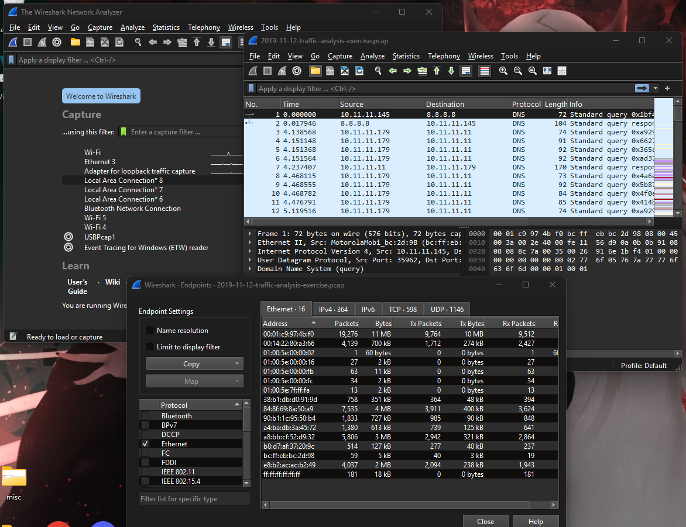
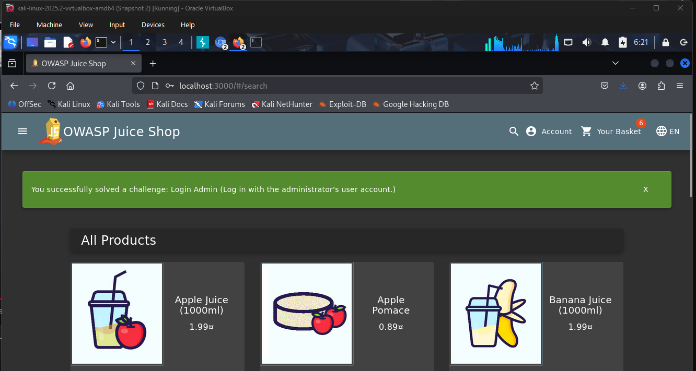

Find the Culprit – Malware Network Traffic Analysis
In this project, I analyzed a PCAP file to identify a Windows host that had been compromised...
PowerShell Script Analysis
I examined a suspicious PowerShell script configured to log keystrokes and exfiltrate data...

OWASP Juice Shop Exploitation
I completed several penetration testing challenges, including SQL injection, CAPTCHA bypass, and privilege escalation...
